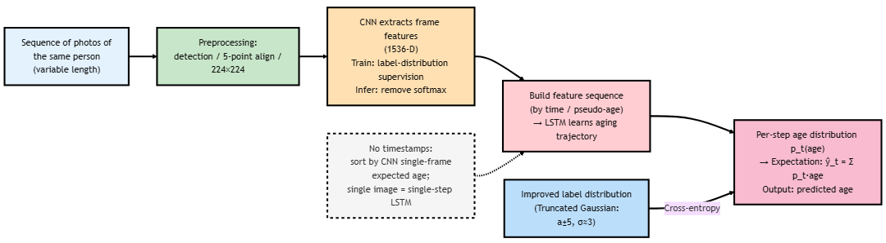

Thorough Analysis | From Static to Temporal: Individualized Aging Trajectories and Label Distribution Learning
This post offers a close reading of Geng et al.’s “Recurrent Age Estimation” (2019). It lays out the algorithmic pipeline and overall architecture of Recurrent Age Estimation (RAE), summarizes the experimental setups and key results on public datasets, and provides a brief analysis of model performance and computational cost.
Paper link: Recurrent age estimation
Prerequisite posts:
Most age-estimation methods still operate at the single-frame level; even with LDL, they ignore temporal changes within a person. RAE forms a sequence from multiple photos of the same identity: a CNN extracts appearance features, and an LSTM learns an individualized aging trajectory. Meanwhile, the label distribution is truncated to the vicinity of the true age (a ± 5 years). This combination of “temporal modeling + localized label distribution” significantly lowers MAE on standard datasets, with larger gains as sequence coverage improves.
Recurrent Age Estimation (RAE)
RAE treats “multiple faces of the same person” as a time series. A convolutional network learns stable appearance features, and a recurrent network captures how an individual’s face evolves over time. Concretely, Inception-v4 is first trained as a classifier under label distribution supervision; after training, the softmax layer is removed, and the feature vector “right before the last dropout” (1536-D) is used as the frame-level representation. Frames from the same identity are concatenated—roughly in chronological order—into a sequence and fed into an LSTM.
To make supervision more realistic, the label distribution is no longer a full-support Gaussian: for a true age a, the distribution is truncated to the neighborhood [a − 5, a + 5] and zeroed outside (σ ≈ 3), preserving uncertainty among nearby ages while suppressing the noisy tails far from the ground truth. The LSTM outputs an age distribution at each time step; training minimizes a sequence-level cross-entropy between distributions, and inference takes the expectation of the predicted distribution to obtain a scalar age.
RAE supports variable-length sequences: with only a single photo it degenerates to a one-step sequence and still produces a result. If reliable timestamps are unavailable, one may use EXIF/file time or sort a person’s images by pseudo-age from a single-frame coarse predictor before running the LSTM forward.
Preprocessing follows standard practice: face detection → five-point alignment → resize to 224×224; train/test splits are made by identity to avoid leakage. At inference, simple TTA with horizontal flipping can be used for robustness. The overall pipeline is illustrated below.

Experiments and Results
On the MORPH and FG-NET datasets, RAE achieves a substantially lower MAE than DLDL, which relies only on single-frame appearance: around 1.32 on MORPH (vs. ~2.43 for DLDL) and around 2.19 on FG-NET (vs. ~3.76). The Cumulative Score (CS) curves likewise show consistent gains across thresholds. The improvement mainly stems from two factors: (1) the LSTM captures individualized temporal information—whether someone ages faster/slower and which appearance cues change stably over time; (2) the truncated-Gaussian label distribution focuses supervision within a plausible neighborhood, mitigating instability from small sample sizes and noisy labels.
As sequences get longer, predictions generally become more stable and accurate; the gains diminish if frames with extreme pose or poor quality are added. In terms of computation, RAE is slightly slower than a pure CNN during both training and inference, but with GPU-side frame-feature extraction, throughput is practical for real-world use. Overall, when data meets the basic condition of “multiple images per identity,” RAE unifies “distributional uncertainty” and “temporal context” in a single framework, delivering clear, reproducible accuracy improvements without sacrificing deployability.